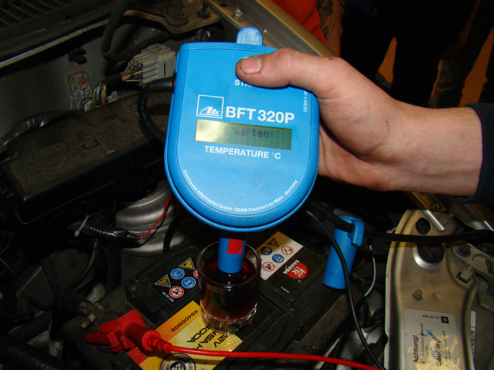
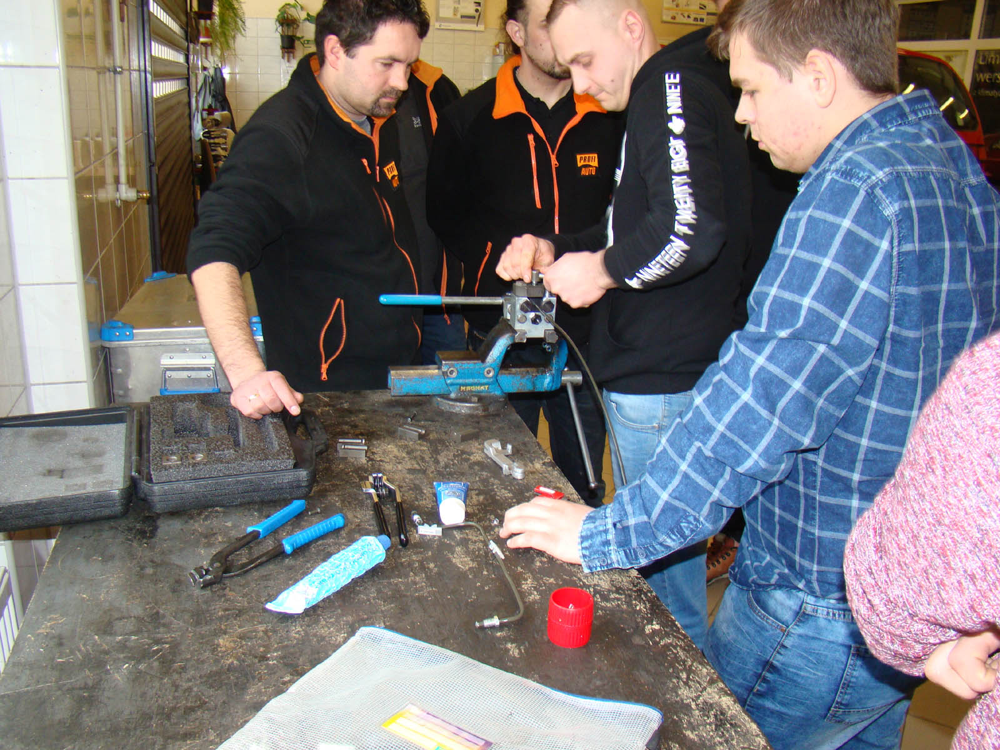
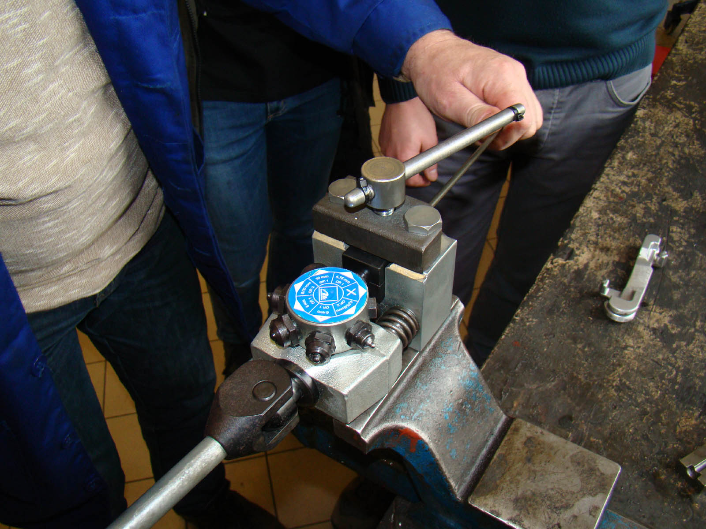
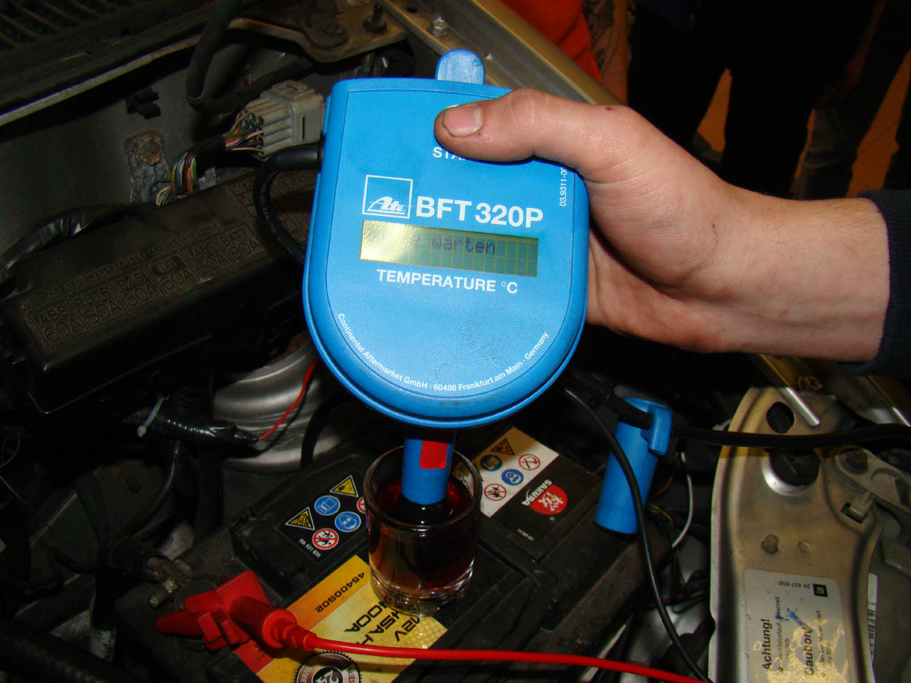
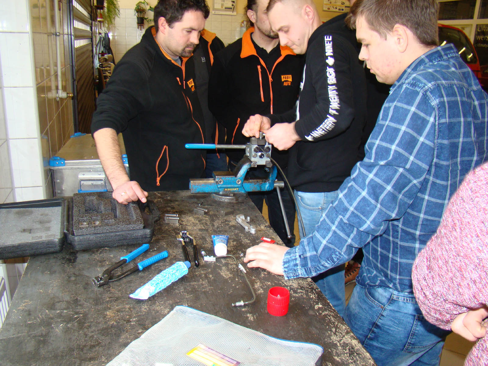
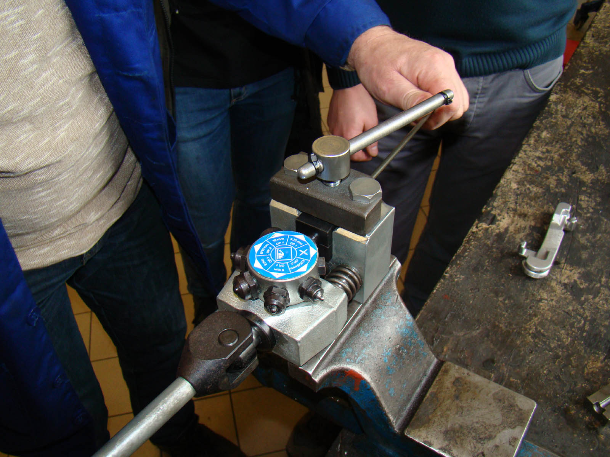

 

 

W dniach 19-20 luty w TCKPiU odbyło się szkolenie pt. "Serwis, konserwacja i naprawa nowoczesnych układów hamulcowych" przeprowadzone przez przedstawiciela firmy ATE oraz we współpracy z firmą MYTNIK. Szkolenie to było skierowane dla nauczycieli i uczniów TCKPiU oraz osób z branży mechaniki pojazdów samochodowych.